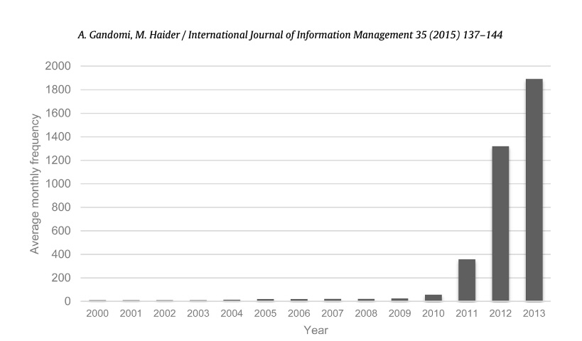
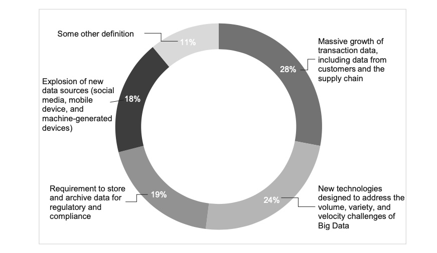
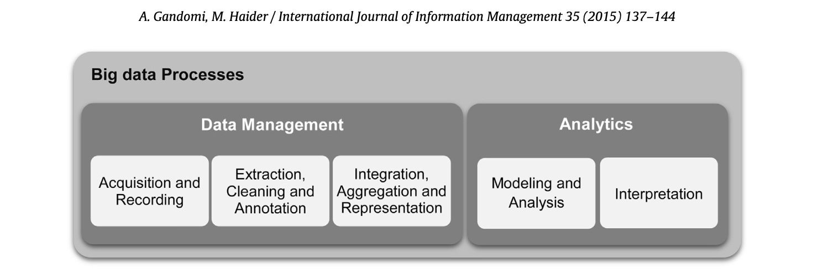

Beyond The Hype: Big Data Concepts, Methods, And Analytics
Amir Gandomi, Murtaza Haider
Keywords: Big data analytics, Big data definition, Unstructured data analytics, Predictive analytics
Abstract
Size is the first, and at times, the only dimension that leaps out at the mention of big data. This paper attempts to offer a broader definition of big data that captures its other unique and defining character- istics. The rapid evolution and adoption of big data by industry has leapfrogged the discourse to popular outlets, forcing the academic press to catch up. Academic journals in numerous disciplines, which will benefit from a relevant discussion of big data, have yet to cover the topic. This paper presents a consol- idated description of big data by integrating definitions from practitioners and academics. The paper primary focus is on the analytic methods used for big data. A particular distinguishing feature of this paper is its focus on analytics related to unstructured data, which constitute 95% of big data. This paper highlights the need to develop appropriate and efficient analytical methods to leverage massive volumes of heterogeneous data in unstructured text, audio, and video formats. This paper also reinforces the need to devise new tools for predictive analytics for structured big data. The statistical methods in practice were devised to infer from sample data. The heterogeneity, noise, and the massive size of structured big data calls for developing computationally efficient algorithms that may avoid big data pitfalls, such as spurious correlation.
1. Introduction
This paper documents the basic concepts relating to big data. It attempts to consolidate the hitherto fragmented discourse on what constitutes big data, what metrics define the size and other characteristics of big data, and what tools and technologies exist to harness the potential of big data.
From corporate leaders to municipal planners and academics, big data are the subject of attention, and to some extent, fear. The sudden rise of big data has left many unprepared. In the past, new technological developments first appeared in technical and academic publications. The knowledge and synthesis later seeped into other avenues of knowledge mobilization, including books. The fast evolution of big data technologies and the ready accep- tance of the concept by public and private sectors left little time for the discourse to develop and mature in the academic domain. Authors and practitioners leapfrogged to books and other electronic media for immediate and wide circulation of their work on big data. Thus, one finds several books on big data, including Big Data for Dummies, but not enough fundamental discourse in academic publications.
The leapfrogging of the discourse on big data to more popular outlets implies that a coherent understanding of the concept and its nomenclature is yet to develop. For instance, there is little con- sensus around the fundamental question of how big the data has to be to qualify as ‘big data’. Thus, there exists the need to docu- ment in the academic press the evolution of big data concepts and technologies.
A key contribution of this paper is to bring forth the oft- neglected dimensions of big data. The popular discourse on big data, which is dominated and influenced by the marketing efforts of large software and hardware developers, focuses on predictive analytics and structured data. It ignores the largest component of big data, which is unstructured and is available as audio, images, video, and unstructured text. It is estimated that the analytics-ready struc- tured data forms only a small subset of big data. The unstructured data, especially data in video format, is the largest component of big data that is only partially archived.
This paper is organized as follows. We begin the paper by defin- ing big data. We highlight the fact that size is only one of several dimensions of big data. Other characteristics, such as the frequency with which data are generated, are equally important in defining big data. We then expand the discussion on various types of big data, namely text, audio, video, and social media. We apply theanalytics lens to the discussion on big data. Hence, when we dis- cuss data in video format, we focus on methods and tools to analyze data in video format.
Given that the discourse on big data is contextualized in predictive analytics frameworks, we discuss how analytics have captured the imaginations of business and government leaders and describe the state-of-practice of a rapidly evolving industry. We also highlight the perils of big data, such as spurious correlation, which have hitherto escaped serious inquiry. The discussion has remained focused on correlation, ignoring the more nuanced and involved discussion on causation. We conclude by highlighting the expected developments to realize in the near future in big data analytics.
2. Defining big data
While it is ubiquitous today, however, ‘big data’ as a concept is nascent and has uncertain origins. Diebold (2012) argues that the term “big data . . . probably originated in lunch-table conversa- tions at Silicon Graphics Inc. (SGI) in the mid-1990s, in which John Mashey figured prominently”. Despite the references to the mid- nineties, Fig. 1 shows that the term became widespread as recently as in 2011. The current hype can be attributed to the promotional initiatives by IBM and other leading technology companies who invested in building the niche analytics market.
Big data definitions have evolved rapidly, which has raised some confusion. This is evident from an online survey of 154 C-suite global executives conducted by Harris Interactive on behalf of SAP in April 2012 (“Small and midsize companies look to make big gains with big data,” 2012). Fig. 2 shows how executives differed in their understanding of big data, where some definitions focused on what it is, while others tried to answer what it does.
Big data definitions have evolved rapidly, which has raised some confusion. This is evident from an online survey of 154 C-suite global executives conducted by Harris Interactive on behalf of SAP in April 2012 (“Small and midsize companies look to make big gains with big data,” 2012). Fig. 2 shows how executives differed in their understanding of big data, where some definitions focused on what it is, while others tried to answer what it does.
Clearly, size is the first characteristic that comes to mind considering the question “what is big data?” However, other char- acteristics of big data have emerged recently. For instance, Laney (2001) suggested that Volume, Variety, and Velocity (or the Three V’s) are the three dimensions of challenges in data management. The Three V’s have emerged as a common framework to describe big data (Chen, Chiang, & Storey, 2012; Kwon, Lee, & Shin, 2014). For example, Gartner, Inc. defines big data in similar terms:
Big data is high-volume, high-velocity and high-variety infor- mation assets that demand cost-effective, innovative forms of information processing for enhanced insight and decision making. (Gartner IT Glossary, n.d.)
Similarly, TechAmerica Foundation defines big data as follows:
Big data is a term that describes large volumes of high veloc- ity, complex and variable data that require advanced techniques and technologies to enable the capture, storage, distribution, management, and analysis of the information.
We describe the Three V’s below.
Volume refers to the magnitude of data. Big data sizes are reported in multiple terabytes and petabytes. A survey conducted by IBM in mid-2012 revealed that just over half of the 1144 respondents considered datasets over one terabyte to be big data (Schroeck, Shockley, Smart, Romero-Morales, & Tufano, 2012). One terabyte stores as much data as would fit on 1500 CDs or 220 DVDs, enough to store around 16 million Facebook photographs. Beaver, Kumar, Li, Sobel, and Vajgel (2010) report that Facebook processes up to one million photographs per second. One petabyte equals 1024 terabytes. Earlier estimates suggest that Facebook stored 260 billion photos using storage space of over 20 petabytes.
Definitions of big data volumes are relative and vary by fac- tors, such as time and the type of data. What may be deemed big data today may not meet the threshold in the future because storage capacities will increase, allowing even bigger data sets to be captured. In addition, the type of data, discussed under vari- ety , defines what is meant by ‘big’. Two datasets of the same size may require different data management technologies based on their type, e.g., tabular versus video data. Thus, definitions of big data also depend upon the industry. These considerations there- fore make it impractical to define a specific threshold for big data volumes.
Variety refers to the structural heterogeneity in a dataset. Tech- nological advances allow firms to use various types of structured, semi-structured, and unstructured data. Structured data, which constitutes only 5% of all existing data (Cukier, 2010), refers to the tabular data found in spreadsheets or relational databases. Text, images, audio, and video are examples of unstructured data, which sometimes lack the structural organization required by machines for analysis. Spanning a continuum between fully structured and unstructured data, the format of semi-structured data does not conform to strict standards. Extensible Markup Language (XML), a textual language for exchanging data on the Web, is a typical example of semi-structured data. XML documents contain user-defined data tags which make them machine-readable.
A high level of variety, a defining characteristic of big data, is not necessarily new. Organizations have been hoarding unstruc- tured data from internal sources (e.g., sensor data) and external sources (e.g., social media). However, the emergence of new data management technologies and analytics, which enable organiza- tions to leverage data in their business processes, is the innovative aspect. For instance, facial recognition technologies empower the brick-and-mortar retailers to acquire intelligence about store traffic, the age or gender composition of their customers, and their in-store movement patterns. This invaluable information is leveraged in decisions related to product promotions, placement, and staffing. Clickstream data provides a wealth of information about customer behavior and browsing patterns to online retail- ers. Clickstream advises on the timing and sequence of pages viewed by a customer. Using big data analytics, even small and medium-sized enterprises (SMEs) can mine massive volumes of semi-structured data to improve website designs and implement effective cross-selling and personalized product recommendation systems.
Velocity refers to the rate at which data are generated and the speed at which it should be analyzed and acted upon. The prolifera- tion of digital devices such as smartphones and sensors has led to an unprecedented rate of data creation and is driving a growing need for real-time analytics and evidence-based planning. Even conven- tional retailers are generating high-frequency data. Wal-Mart, for instance, processes more than one million transactions per hour (Cukier, 2010). The data emanating from mobile devices and flow- ing through mobile apps produces torrents of information that can be used to generate real-time, personalized offers for everyday cus- tomers. This data provides sound information about customers, such as geospatial location, demographics, and past buying pat- terns, which can be analyzed in real time to create real customer value.
Given the soaring popularity of smartphones, retailers will soon have to deal with hundreds of thousands of streaming data sources that demand real-time analytics. Traditional data management sys- tems are not capable of handling huge data feeds instantaneously. This is where big data technologies come into play. They enable firms to create real-time intelligence from high volumes of ‘perish- able’ data.
In addition to the three Vs, other dimensions of big data have also been mentioned. These include:
- Veracity.IBMcoinedVeracityasthefourthV,whichrepresentsthe unreliability inherent in some sources of data. For example, cus- tomer sentiments in social media are uncertain in nature, since they entail human judgment. Yet they contain valuable informa- tion. Thus the need to deal with imprecise and uncertain data is another facet of big data, which is addressed using tools and analytics developed for management and mining of uncertain data.
- Variability (and complexity). SAS introduced Variability and Com- plexity as two additional dimensions of big data. Variability refers to the variation in the data flow rates. Often, big data velocity is not consistent and has periodic peaks and troughs. Complexity refers to the fact that big data are generated through a myriad of sources. This imposes a critical challenge: the need to con- nect, match, cleanse and transform data received from different sources.
- Value. Oracle introduced Value as a defining attribute of big data. Based on Oracle’s definition, big data are often characterized by relatively “low value density”. That is, the data received in the original form usually has a low value relative to its volume. How- ever, a high value can be obtained by analyzing large volumes of such data.
The relativity of big data volumes discussed earlier applies to all dimensions. Thus, universal benchmarks do not exist for vol- ume, variety, and velocity that define big data. The defining limits depend upon the size, sector, and location of the firm and these limits evolve over time. Also important is the fact that these dimen- sions are not independent of each other. As one dimension changes, the likelihood increases that another dimension will also change as a result. However, a ‘three-V tipping point’ exists for every firm beyond which traditional data management and analysis tech- nologies become inadequate for deriving timely intelligence. The Three-V tipping point is the threshold beyond which firms start dealing with big data. The firms should then trade-off the future value expected from big data technologies against their implemen- tation costs.
3. Big data analytics
Big data are worthless in a vacuum. Its potential value is unlocked only when leveraged to drive decision making. To enable such evidence-based decision making, organizations need efficient processes to turn high volumes of fast-moving and diverse data into meaningful insights. The overall process of extracting insights from big data can be broken down into five stages (Labrinidis & Jagadish, 2012), shown in Fig. 3. These five stages form the two main sub-processes: data management and analytics. Data man- agement involves processes and supporting technologies to acquire and store data and to prepare and retrieve it for analysis. Analytics, on the other hand, refers to techniques used to analyze and acquire intelligence from big data. Thus, big data analytics can be viewed as a sub-process in the overall process of ‘insight extraction’ from big data.
In the following sections, we briefly review big data analyt- ical techniques for structured and unstructured data. Given the breadth of the techniques, an exhaustive list of techniques is beyond the scope of a single paper. Thus, the following tech- niques represent a relevant subset of the tools available for big data analytics.
3.1. Text analytics
Text analytics (text mining) refers to techniques that extract information from textual data. Social network feeds, emails, blogs, online forums, survey responses, corporate documents, news, and call center logs are examples of textual data held by organizations. Text analytics involve statistical analysis, computational linguis- tics, and machine learning. Text analytics enable businesses to convert large volumes of human generated text into meaningful summaries, which support evidence-based decision-making. For instance, text analytics can be used to predict stock market based on information extracted from financial news (Chung, 2014). We present a brief review of text analytics methods below.
Information extraction (IE) techniques extract structured data from unstructured text. For example, IE algorithms can extract structured information such as drug name, dosage, and frequency from medical prescriptions. Two sub-tasks in IE are Entity Recogni- tion (ER) and Relation Extraction (RE) (Jiang, 2012). ER finds names in text and classifies them into predefined categories such as per- son, date, location, and organization. RE finds and extracts semantic relationships between entities (e.g., persons, organizations, drugs, genes, etc.) in the text. For example, given the sentence Steve Jobs co-founded Apple Inc. in 1976, an RE system can extract relations such as FounderOf [Steve Jobs, Apple Inc.] or FoundedIn [Apple Inc., 1976].
Text summarization techniques automatically produce a suc- cinct summary of a single or multiple documents. The resulting summary conveys the key information in the original text(s). Applications include scientific and news articles, advertisements, emails, and blogs. Broadly speaking, summarization follows two approaches: the extractive approach and the abstractive approach. In extractive summarization, a summary is created from the original text units (usually sentences). The resulting summary is a subset of the original document. Based on the extractive approach, formulating a summary involves determining the salient units of a text and stringing them together. The importance of the text units is evaluated by analyzing their location and frequency in the text. Extractive summarization techniques do not require an ‘understanding’ of the text. In contrast, abstractive summarization techniques involve extracting semantic information from the text. The summaries contain text units that are not necessarily present in the original text. In order to parse the original text and generate the summary, abstractive summarization incorporates advanced Natural Language Processing (NLP) techniques. As a result, abstrac- tive systems tend to generate more coherent summaries than the extractive systems do (Hahn & Mani, 2000). However, extractive systems are easier to adopt, especially for big data.
Question answering (QA) techniques provide answers to ques- tions posed in natural language. Apple’s Siri and IBM’s Watson are examples of commercial QA systems. These systems have been implemented in healthcare, finance, marketing, and education. Similar to abstractive summarization, QA systems rely on com- plex NLP techniques. QA techniques are further classified into three categories: the information retrieval (IR)-based approach, the knowledge-based approach, and the hybrid approach. IR-based QA systems often have three sub-components. First is the question processing, used to determine details, such as the question type, question focus, and the answer type, which are used to create a query. Second is document processing which is used to retrieve relevant pre-written passages from a set of existing documents using the query formulated in question processing. Third is answer processing, used to extract candidate answers from the output of the previous component, rank them, and return the highest-ranked candidate as the output of the QA system. Knowledge-based QA sys- tems generate a semantic description of the question, which is then used to query structured resources. The Knowledge-based QA sys- tems are particularly useful for restricted domains, such as tourism, medicine, and transportation, where large volumes of pre-written documents do not exist. Such domains lack data redundancy, which is required for IR-based QA systems. Apple’s Siri is an example of a QA system that exploits the knowledge-based approach. In hybrid QA systems, like IBM’s Watson, while the question is semantically analyzed, candidate answers are generated using the IR methods.
Sentiment analysis (opinion mining) techniques analyze opin- ionated text, which contains people’s opinions toward entities such as products, organizations, individuals, and events. Busi- nesses are increasingly capturing more data about their customers’ sentiments that has led to the proliferation of sentiment anal- ysis (Liu, 2012). Marketing, finance, and the political and social sciences are the major application areas of sentiment analysis. Sentiment analysis techniques are further divided into three sub- groups, namely document-level, sentence-level, and aspect-based. Document-level techniques determine whether the whole docu- ment expresses a negative or a positive sentiment. The assumption is that the document contains sentiments about a single entity. While certain techniques categorize a document into two classes, negative and positive, others incorporate more sentiment classes (like the Amazon’s five-star system) (Feldman, 2013). Sentence- level techniques attempt to determine the polarity of a single sentiment about a known entity expressed in a single sentence. Sentence-level techniques must first distinguish subjective sen- tences from objective ones. Hence, sentence-level techniques tend to be more complex compared to document-level techniques. Aspect-based techniques recognize all sentiments within a docu- ment and identify the aspects of the entity to which each sentiment refers. For instance, customer product reviews usually contain opinions about different aspects (or features) of a product. Using aspect-based techniques, the vendor can obtain valuable informa- tion about different features of the product that would be missed if the sentiment is only classified in terms of polarity.
3.2. Audio analytics
Audio analytics analyze and extract information from unstruc- tured audio data. When applied to human spoken language, audio analytics is also referred to as speech analytics. Since these tech- niques have mostly been applied to spoken audio, the terms audio analytics and speech analytics are often used interchangeably. Currently, customer call centers and healthcare are the primary application areas of audio analytics.
Call centers use audio analytics for efficient analysis of thousands or even millions of hours of recorded calls. These techniques help improve customer experience, evaluate agent per- formance, enhance sales turnover rates, monitor compliance with different policies (e.g., privacy and security policies), gain insight into customer behavior, and identify product or service issues, among many other tasks. Audio analytics systems can be designed to analyze a live call, formulate cross/up-selling recommendations based on the customer’s past and present interactions, and provide feedback to agents in real time. In addition, automated call centers use the Interactive Voice Response (IVR) platforms to identify and handle frustrated callers.
In healthcare, audio analytics support diagnosis and treatment of certain medical conditions that affect the patient’s commu- nication patterns (e.g., depression, schizophrenia, and cancer) (Hirschberg, Hjalmarsson, & Elhadad, 2010). Also, audio analyt- ics can help analyze an infant’s cries, which contain information about the infant’s health and emotional status (Patil, 2010). The vast amount of data recorded through speech-driven clinical documen- tation systems is another driver for the adoption of audio analytics in healthcare.
Speech analytics follows two common technological approaches: the transcript-based approach (widely known as large-vocabulary continuous speech recognition, LVCSR) and the phonetic-based approach. These are explained below.
- LVCSR systems follow a two-phase process: indexing and search- ing. In the first phase, they attempt to transcribe the speech content of the audio. This is performed using automatic speech recognition (ASR) algorithms that match sounds to words. The words are identified based on a predefined dictionary. If the sys- tem fails to find the exact word in the dictionary, it returns the most similar one. The output of the system is a searchable index file that contains information about the sequence of the words spoken in the speech. In the second phase, standard text-based methods are used to find the search term in the index file.
- Phonetic-based systems work with sounds or phonemes. Phonemes are the perceptually distinct units of sound in a specified language that distinguish one word from another (e.g., the phonemes/k/and/b/differentiate the meanings of “cat” and “bat”). Phonetic-based systems also consist of two phases: phonetic indexing and searching. In the first phase, the system translates the input speech into a sequence of phonemes. This is in contrast to LVCSR systems where the speech is converted into a sequence of words. In the second phase, the system searches the output of the first phase for the phonetic representation of the search terms.
3.3. Video analytics
Video analytics, also known as video content analysis (VCA), involves a variety of techniques to monitor, analyze, and extract meaningful information from video streams. Although video ana- lytics is still in its infancy compared to other types of data mining (Panigrahi, Abraham, & Das, 2010), various techniques have already been developed for processing real-time as well as pre-recorded videos. The increasing prevalence of closed-circuit television (CCTV) cameras and the booming popularity of video- sharing websites are the two leading contributors to the growth of computerized video analysis. A key challenge, however, is the sheer size of video data. To put this into perspective, one second of a high-definition video, in terms of size, is equivalent to over 2000 pages of text (Manyika et al., 2011). Now consider that 100 hours of video are uploaded to YouTube every minute (YouTube Statistics, n.d.).
Big data technologies turn this challenge into opportunity. Obvi- ating the need for cost-intensive and risk-prone manual processing, big data technologies can be leveraged to automatically sift through and draw intelligence from thousands of hours of video. As a result, the big data technology is the third factor that has contributed to the development of video analytics.
The primary application of video analytics in recent years has been in automated security and surveillance systems. In addition to their high cost, labor-based surveillance systems tend to be less effective than automatic systems (e.g., Hakeem et al., 2012 report that security personnel cannot remain focused on surveillance tasks for more than 20minutes). Video analytics can efficiently and effectively perform surveillance functions such as detecting breaches of restricted zones, identifying objects removed or left unattended, detecting loitering in a specific area, recognizing sus- picious activities, and detecting camera tampering, to name a few. Upon detection of a threat, the surveillance system may notify secu- rity personnel in real time or trigger an automatic action (e.g., sound alarm, lock doors, or turn on lights).
The data generated by CCTV cameras in retail outlets can be extracted for business intelligence. Marketing and operations man- agement are the primary application areas. For instance, smart algorithms can collect demographic information about customers, such as age, gender, and ethnicity. Similarly, retailers can count the number of customers, measure the time they stay in the store, detect their movement patterns, measure their dwell time in dif- ferent areas, and monitor queues in real time. Valuable insights can be obtained by correlating this information with customer demographics to drive decisions for product placement, price, assortment optimization, promotion design, cross-selling, layout optimization, and staffing.
Another potential application of video analytics in retail lies in the study of buying behavior of groups. Among family members who shop together, only one interacts with the store at the cash register, causing the traditional systems to miss data on buying patterns of other members. Video analytics can help retailers address this missed opportunity by providing information about the size of the group, the group’s demographics, and the individual members’ buying behavior.
Automatic video indexing and retrieval constitutes another domain of video analytics applications. The widespread emergence of online and offline videos has highlighted the need to index multi- media content for easy search and retrieval. The indexing of a video can be performed based on different levels of information available in a video including the metadata, the soundtrack, the trans- cripts, and the visual content of the video. In the metadata-based approach, relational database management systems (RDBMS) are used for video search and retrieval. Audio analytics and text ana- lytics techniques can be applied to index a video based on the associated soundtracks and transcripts, respectively. A compre- hensive review of approaches and techniques for video indexing is presented in Hu, Xie, Li, Zeng, and Maybank (2011).
In terms of the system architecture, there exist two approaches to video analytics, namely server-based and edge-based:
- Server-based architecture. In this configuration, the video captured through each camera is routed back to a centralized and dedicated server that performs the video analytics. Due to bandwidth lim- its, the video generated by the source is usually compressed by reducing the frame rates and/or the image resolution. The result- ing loss of information can affect the accuracy of the analysis. However, the server-based approach provides economies of scale and facilitates easier maintenance.
- Edge-based architecture. In this approach, analytics are applied at the ‘edge’ of the system. That is, the video analytics is performed locally and on the raw data captured by the camera. As a result, the entire content of the video stream is available for the analysis, enabling a more effective content analysis. Edge-based systems, however, are more costly to maintain and have a lower processing power compared to the server-based systems.
3.4. Social media analytics
Social media analytics refer to the analysis of structured and unstructured data from social media channels. Social media is a broad term encompassing a variety of online platforms that allow users to create and exchange content. Social media can be cate- gorized into the following types: Social networks (e.g., Facebook and LinkedIn), blogs (e.g., Blogger and WordPress), microblogs (e.g., Twitter and Tumblr), social news (e.g., Digg and Reddit), social bookmarking (e.g., Delicious and StumbleUpon), media sharing (e.g., Instagram and YouTube), wikis (e.g., Wikipedia and Wikihow), question-and-answer sites (e.g., Yahoo! Answers and Ask.com) and review sites (e.g., Yelp, TripAdvisor) (Barbier & Liu, 2011; Gundecha & Liu, 2012). Also, many mobile apps, such as Find My Friend, provide a platform for social interactions and, hence, serve as social media channels.
Although the research on social networks dates back to early 1920s, nevertheless, social media analytics is a nascent field that has emerged after the advent of Web 2.0 in the early 2000s. The key characteristic of the modern social media analytics is its data- centric nature. The research on social media analytics spans across several disciplines, including psychology, sociology, anthropology, computer science, mathematics, physics, and economics. Market- ing has been the primary application of social media analytics in recent years. This can be attributed to the widespread and grow- ing adoption of social media by consumers worldwide (He, Zha, & Li, 2013), to the extent that Forrester Research, Inc., projects social media to be the second-fastest growing marketing channel in the US between 2011 and 2016 (VanBoskirk, Overby, & Takvorian, 2011).
User-generated content (e.g., sentiments, images, videos, and bookmarks) and the relationships and interactions between the network entities (e.g., people, organizations, and products) are the two sources of information in social media. Based on this cate- gorization, the social media analytics can be classified into two groups:
- Content-based analytics. Content-based analytics focuses on the data posted by users on social media platforms, such as customer feedback, product reviews, images, and videos. Such content on social media is often voluminous, unstructured, noisy, and dynamic. Text, audio, and video analytics, as discussed earlier, can be applied to derive insight from such data. Also, big data technologies can be adopted to address the data processing chal- lenges.
- Structure-based analytics. Also referred to as social network ana- lytics, this type of analytics are concerned with synthesizing the structural attributes of a social network and extracting intelli- gence from the relationships among the participating entities. The structure of a social network is modeled through a set of nodes and edges, representing participants and relationships, respectively. The model can be visualized as a graph composed of the nodes and the edges. We review two types of network graphs, namely social graphs and activity graphs (Heidemann, Klier, & Probst, 2012). In social graphs, an edge between a pair of nodes only signifies the existence of a link (e.g., friendship) between the corresponding entities. Such graphs can be mined to identify communities or determine hubs (i.e., the users with a relatively large number of direct and indirect social links). In activity networks, however, the edges represent actual inter- actions between any pair of nodes. The interactions involve exchanges of information (e.g., likes and comments). Activity graphs are preferable to social graphs, because an active rela- tionship is more relevant to analysis than a mere connection.
Various techniques have recently emerged to extract informa- tion from the structure of social networks. We briefly discuss these below.
Community detection, also referred to as community discov- ery, extracts implicit communities within a network. For online social networks, a community refers to a sub-network of users who interact more extensively with each other than with the rest of the network. Often containing millions of nodes and edges, online social networks tend to be colossal in size. Community detec- tion helps to summarize huge networks, which then facilitates uncovering existing behavioral patterns and predicting emergent properties of the network. In this regard, community detection is similar to clustering (Aggarwal, 2011), a data mining technique used to partition a data set into disjoint subsets based on the similarity of data points. Community detection has found several application areas, including marketing and the World Wide Web (Parthasarathy, Ruan, & Satuluri, 2011). For example, community detection enables firms to develop more effective product recom- mendation systems.
Social influence analysis refers to techniques that are concerned with modeling and evaluating the influence of actors and connec- tions in a social network. Naturally, the behavior of an actor in a social network is affected by others. Thus, it is desirable to evaluate the participants’ influence, quantify the strength of connections, and uncover the patterns of influence diffusion in a network. Social influence analysis techniques can be leveraged in viral marketing to efficiently enhance brand awareness and adoption.
A salient aspect of social influence analysis is to quantify the importance of the network nodes. Various measures have been developed for this purpose, including degree centrality, between- ness centrality, closeness centrality, and eigenvector centrality (for more details refer to Tang & Liu, 2010). Other measures evaluate the strength of connections represented by edges or model the spread of influence in social networks. The Linear Threshold Model (LTM) and Independent Cascade Model (ICM) are two well-known examples of such frameworks (Sun & Tang, 2011).
Link prediction specifically addresses the problem of predicting future linkages between the existing nodes in the underlying net- work. Typically, the structure of social networks is not static and continuously grows through the creation of new nodes and edges. Therefore, a natural goal is to understand and predict the dynamics of the network. Link prediction techniques predict the occur- rence of interaction, collaboration, or influence among entities of a network in a specific time interval. Link prediction techniques outperform pure chance by factors of 40–50, suggesting that the current structure of the network surely contains latent information about future links (Liben-Nowell & Kleinberg, 2003).
In biology, link prediction techniques are used to discover links or associations in biological networks (e.g., protein–protein inter- action networks), eliminating the need for expensive experiments (Hasan & Zaki, 2011). In security, link prediction helps to uncover potential collaborations in terrorist or criminal networks. In the context of online social media, the primary application of link prediction is in the development of recommendation systems, such as Facebook’s “People You May Know”, YouTube’s “Rec- ommended for You”, and Netflix’s and Amazon’s recommender engines.
3.5. Predictive analytics
Predictive analytics comprise a variety of techniques that pre- dict future outcomes based on historical and current data. In practice, predictive analytics can be applied to almost all disciplines – from predicting the failure of jet engines based on the stream of data from several thousand sensors, to predicting customers’ next moves based on what they buy, when they buy, and even what they say on social media.
At its core, predictive analytics seek to uncover patterns and capture relationships in data. Predictive analytics techniques are subdivided into two groups. Some techniques, such as moving aver- ages, attempt to discover the historical patterns in the outcome variable(s) and extrapolate them to the future. Others, such as linear regression, aim to capture the interdependencies between outcome variable(s) and explanatory variables, and exploit them to make predictions. Based on the underlying methodology, techniques can also be categorized into two groups: regression techniques (e.g., multinomial logit models) and machine learning techniques (e.g., neural networks). Another classification is based on the type of outcome variables: techniques such as linear regression address continuous outcome variables (e.g., sale price of houses), while others such as Random Forests are applied to discrete outcome variables (e.g., credit status).
Predictive analytics techniques are primarily based on statis- tical methods. Several factors call for developing new statistical methods for big data. First, conventional statistical methods are rooted in statistical significance: a small sample is obtained from the population and the result is compared with chance to examine the significance of a particular relationship. The conclusion is then generalized to the entire population. In contrast, big data samples are massive and represent the majority of, if not the entire, popu- lation. As a result, the notion of statistical significance is not that relevant to big data. Secondly, in terms of computational efficiency, many conventional methods for small samples do not scale up to big data. The third factor corresponds to the distinctive features inherent in big data: heterogeneity, noise accumulation, spurious correlations, and incidental endogeneity (Fan, Han, & Liu, 2014). We describe these below.
- Heterogeneity. Big data are often obtained from different sources and represent information from different sub-populations. As a result, big data are highly heterogeneous. The sub-population data in small samples are deemed outliers because of their insuf- ficient frequency. However, the sheer size of big data sets creates the unique opportunity to model the heterogeneity arising from sub-population data, which would require sophisticated statisti- cal techniques.
- Noise accumulation. Estimating predictive models for big data often involves the simultaneous estimation of several parame- ters. The accumulated estimation error (or noise) for different parameters could dominate the magnitudes of variables that have true effects within the model. In other words, some variables with significant explanatory power might be overlooked as a result of noise accumulation.
- Spurious correlation. For big data, spurious correlation refers to uncorrelated variables being falsely found to be correlated due to the massive size of the dataset. Fan and Lv (2008) show this phe- nomenon through a simulation example, where the correlation coefficient between independent random variables is shown to increase with the size of the dataset. As a result, some variables that are scientifically unrelated (due to their independence) are erroneously proven to be correlated as a result of high dimen- sionality.
- Incidental endogeneity. A common assumption in regression anal- ysis is the exogeneity assumption: the explanatory variables, or predictors, are independent of the residual term. The validity of most statistical methods used in regression analysis depends on this assumption. In other words, the existence of incidental endo- geneity (i.e., the dependence of the residual term on some of the predictors) undermines the validity of the statistical methods used for regression analysis. Although the exogeneity assump- tion is usually met in small samples, incidental endogeneity is commonly present in big data. It is worthwhile to mention that, in contrast to spurious correlation, incidental endogeneity refers to a genuine relationship between variables and the error term.
The irrelevance of statistical significance, the challenges of com- putational efficiency, and the unique characteristics of big data discussed above highlight the need to develop new statistical tech- niques to gain insights from predictive models.
4. Concluding remarks
The objective of this paper is to describe, review, and reflect on big data. The paper first defined what is meant by big data to consol- idate the divergent discourse on big data. We presented various def- initions of big data, highlighting the fact that size is only one dimen- sion of big data. Other dimensions, such as velocity and variety are equally important. The paper’s primary focus has been on analytics to gain valid and valuable insights from big data. We highlight the point that predictive analytics, which deals mostly with structured data, overshadows other forms of analytics applied to unstructured data, which constitutes 95% of big data. We reviewed analytics techniques for text, audio, video, and social media data, as well as predictive analytics. The paper makes the case for new statistical techniques for big data to address the peculiarities that differentiate big data from smaller data sets. Most statistical methods in practice have been devised for smaller data sets comprising samples.
Technological advances in storage and computations have enabled cost-effective capture of the informational value of big data in a timely manner. Consequently, one observes a prolifera- tion in real-world adoption of analytics that were not economically feasible for large-scale applications prior to the big data era. For example, sentiment analysis (opinion mining) have been known since the early 2000s (Pang & Lee, 2008). However, big data tech- nologies enabled businesses to adopt sentiment analysis to glean useful insights from millions of opinions shared on social media. The processing of unstructured text fueled by the massive influx of social media data is generating business value by adopting conven- tional (pre-big data) sentiment analysis techniques, which may not be ideally suited to leverage big data.
Although major innovations in analytical techniques for big data have not yet taken place, one anticipates the emergence of such novel analytics in the near future. For instance, real-time analyt- ics will likely become a prolific field of research because of the growth in location-aware social media and mobile apps. Since big data are noisy, highly interrelated, and unreliable, it will likely lead to the development of statistical techniques more readily apt for mining big data while remaining sensitive to the unique character- istics. Going beyond samples, additional valuable insights could be obtained from the massive volumes of less ‘trustworthy’ data.
Acknowledgment
The authors would like to acknowledge research and editing support provided by Ms. Ioana Moca.
References
- Aggarwal, C. C. (2011). An introduction to social network data analytics. In C. C. Aggarwal (Ed.), Social network data analytics (pp. 1–15). United States: Springer.
- Barbier, G., & Liu, H. (2011). Data mining in social media. In C. C. Aggarwal (Ed.), Social network data analytics (pp. 327–352). United States: Springer.
- Beaver, D., Kumar, S., Li, H. C., Sobel, J., & Vajgel, P. (2010). Finding a needle in haystack: Facebook’s photo storage. In Proceedings of the nineth USENIX con- ference on operating systems design and implementation (pp. 1–8). Berkeley, CA, USA: USENIX Association.
- Chen, H., Chiang, R. H. L., & Storey, V. C. (2012). Business intelligence and analytics: From big data to big impact. MIS Quarterly, 36(4), 1165–1188.
- Chung, W. (2014). BizPro: Extracting and categorizing business intelligence fac- tors from textual news articles. International Journal of Information Management, 34(2), 272–284.
- Cukier K., The Economist, Data, data everywhere: A special report on manag- ing information, 2010, February 25, Retrieved from http://www.economist. com/node/15557443
- Diebold, F. X. (2012). A personal perspective on the origin(s) and develop- ment of “big data”: The phenomenon, the term, and the discipline (Scholarly Paper No. ID 2202843). Social Science Research Network. Retrieved from http://papers.ssrn.com/sol3/papers.cfm?abstract id=2202843
- Fan, J., Han, F., & Liu, H. (2014). Challenges of big data analysis. National Science Review, 1(2), 293–314.
- Fan, J., & Lv, J. (2008). Sure independence screening for ultrahigh dimensional feature space. Journal of the Royal Statistical Society: Series B (Statistical Methodology), 70(5), 849–911.
- Feldman, R. (2013). Techniques and applications for sentiment analysis. Communi- cations of the ACM, 56(4), 82–89.
- Gartner IT Glossary (n.d.). Retrieved from http://www.gartner.com/it-glossary/big- data/
- Gundecha, P., & Liu, H. (2012). Mining social media: A brief introduction. Tutorials in Operations Research, 1(4)
- Hahn, U., & Mani, I. (2000). The challenges of automatic summarization. Computer, 33(11), 29–36.
- Hakeem, A., Gupta, H., Kanaujia, A., Choe, T. E., Gunda, K., Scanlon, A., et al. (2012). Video analytics for business intelligence. In C. Shan, F. Porikli, T. Xiang, & S. Gong (Eds.), Video analytics for business intelligence (pp. 309–354). Berlin, Heidelberg: Springer.
- Hasan, M. A., & Zaki, M. J. (2011). A survey of link prediction in social networks. In C. C. Aggarwal (Ed.), Social network data analytics (pp. 243–275). United States: Springer.
- Heidemann, J., Klier, M., & Probst, F. (2012). Online social networks: A survey of a global phenomenon. Computer Networks, 56(18), 3866–3878.
- He, W., Zha, S., & Li, L. (2013). Social media competitive analysis and text mining: A case study in the pizza industry. International Journal of Information Management, 33(3), 464–472.
- Hirschberg, J., Hjalmarsson, A., & Elhadad, N. (2010). “You’re as sick as you sound”: Using computational approaches for modeling speaker state to gauge illness and recovery. In A. Neustein (Ed.), Advances in speech recognition (pp. 305–322). United States: Springer.
- Hu, W., Xie, N., Li, L., Zeng, X., & Maybank, S. (2011). A survey on visual content-based video indexing and retrieval. IEEE Transactions on Systems, Man, and Cybernetics, Part C: Applications and Reviews, 41(6), 797–819.
- Jiang, J. (2012). Information extraction from text. In C. C. Aggarwal, & C. Zhai (Eds.), Mining text data (pp. 11–41). United States: Springer.
- Kwon, O., Lee, N., & Shin, B. (2014). Data quality management, data usage expe- rience and acquisition intention of big data analytics. International Journal of Information Management, 34(3), 387–394.
- Labrinidis, A., & Jagadish, H. V. (2012). Challenges and opportunities with big data. Proceedings of the VLDB Endowment, 5(12), 2032–2033.
- Laney, D. (2001, February 6). 3-D data management: Controlling data volume, velocity and variety. Application Delivery Strategies by META Group Inc. Retrieved from http://blogs.gartner.com/doug-laney/files/2012/01/ad949-3D-Data- Management-Controlling-Data-Volume-Velocity-and-Variety.pdf
- Liben-Nowell, D., & Kleinberg, J. (2003). The link prediction problem for social networks. In Proceedings of the twelfth international conference on information and knowledge management (pp. 556–559). New York, NY, USA: ACM.
- Liu, B. (2012). Sentiment analysis and opinion mining. Synthesis Lectures on Human Language Technologies, 5(1), 1–167. <
- Manyika, J., Chui, M., Brown, B., Bughin, J., Dobbs, R., Roxburgh, C., et al. (2011). Big data: The next frontier for innovation, competition, and produc- tivity. McKinsey Global Institute. Retrieved from http://www.citeulike.org/ group/18242/article/9341321
- Pang, B., & Lee, L. (2008). Opinion mining and sentiment analysis. Foundations and Trends in Information Retrieval, 2(1–2), 1–135.
- Panigrahi, B. K., Abraham, A., & Das, S. (2010). Computational intelligence in power engineering. Springer.
- Parthasarathy, S., Ruan, Y., & Satuluri, V. (2011). Community discovery in social networks: Applications, methods and emerging trends. In C. C. Aggarwal (Ed.), Social network data analytics (pp. 79–113). United States: Springer.
- Patil, H. A. (2010). “Cry baby”: Using spectrographic analysis to assess neonatal health status from an infant’s cry. In A. Neustein (Ed.), Advances in speech recog- nition (pp. 323–348). United States: Springer.
- Schroeck, M., Shockley, R., Smart, J., Romero-Morales, D., & Tufano, P. (2012). Analytics: The real-world use of big data. How innovative enterprises extract value from uncertain data. IBM Institute for Business Value. Retrieved from http://www-03.ibm.com/systems/hu/resources/the real word use of big data.pdf
- (2012, June 26). Small and midsize companies look to make big gains with “big data,” according to recent poll conducted on behalf of SAP. Retrieved from http://global.sap.com/corporate-en/news.epx?PressID=19188
- Sun, J., & Tang, J. (2011). A survey of models and algorithms for social influence analysis. In C. C. Aggarwal (Ed.), Social network data analytics (pp. 177–214). United States: Springer.
- Tang, L., & Liu, H. (2010). Community detection and mining in social media. Synthesis Lectures on Data Mining and Knowledge Discovery, 2(1), 1–137.
- TechAmerica Foundation’s Federal Big Data Commission. (2012). Demystifying big data: A practical guide to transforming the business of Government. Retrieved from http://www.techamerica.org/Docs/fileManager.cfm?f=techamerica- bigdatareport-final.pdf
- VanBoskirk, S., Overby, C. S., & Takvorian, S. (2011). US interactive mar- keting forecast 2011 to 2016. Forrester Research, Inc. Retrieved from https://www.forrester.com/US+Interactive+Marketing+Forecast+2011+To+ 2016/fulltext/-/E-RES59379
- YouTube Statistics (n.d.). Retrieved from http://www.youtube.com/yt/press/ statistics.html